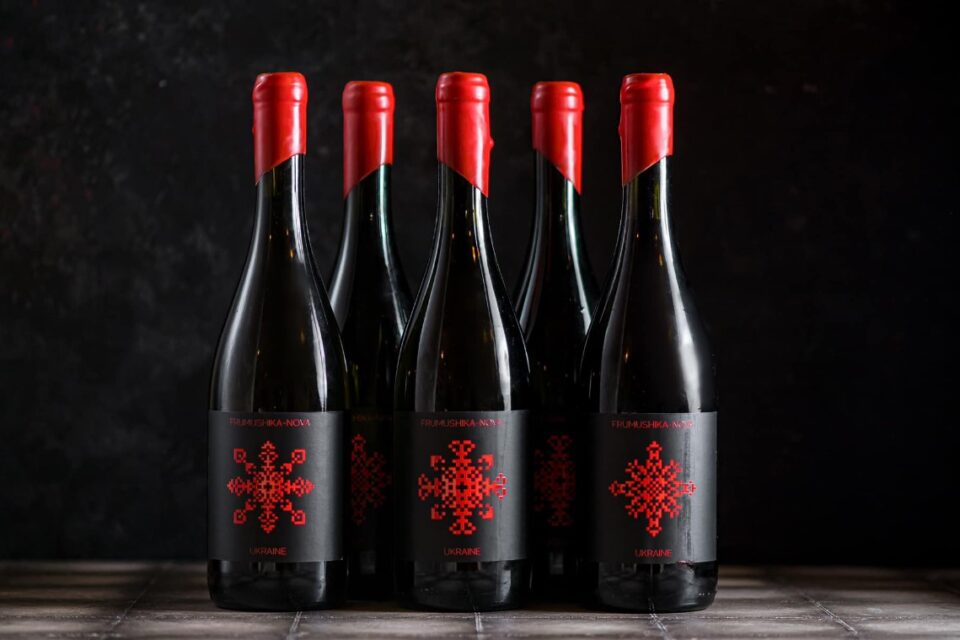

«Вишуканий смак» — це компанія, що спеціалізується на продажі алкогольних напоїв найвищої якості. Ми співпрацюємо лише з перевіреними постачальниками, щоб гарантувати задоволення кожного клієнта.
Ми пишаємося співпрацею з ТОВ «Винторг» — надійним партнером нашої компанії.

Ми не просто продаємо напої — ми створюємо настрій.
Вишуканий смак у кожній пляшці.
Наші продукти високо оцінені критиками, серед яких «Wine & Spirits».
Ось 3 найпопулярніші позиції нашої продукції серед покупців:
Вид: Шампанське
Марка: Moët & Chandon Brut Impérial
Виробник: Франція
Термін придатності: 8 років
Постачальник: ТОВ «Винторг»
Ціна: 2100 грн
Вид: Коньяк
Марка: Hennessy VSOP
Виробник: Франція
Термін придатності: необмежений
Постачальник: ТОВ «ЄвроАлкоТрейд»
Ціна: 3400 грн
Вид: Біле вино
Марка: Marqués de Cáceres Verdejo
Виробник: Іспанія
Термін придатності: 5 років
Постачальник: ТОВ «Іберія Імпорт»
Ціна: 950 грн
Адреса: м. Чернівці, вул. Головна, 15